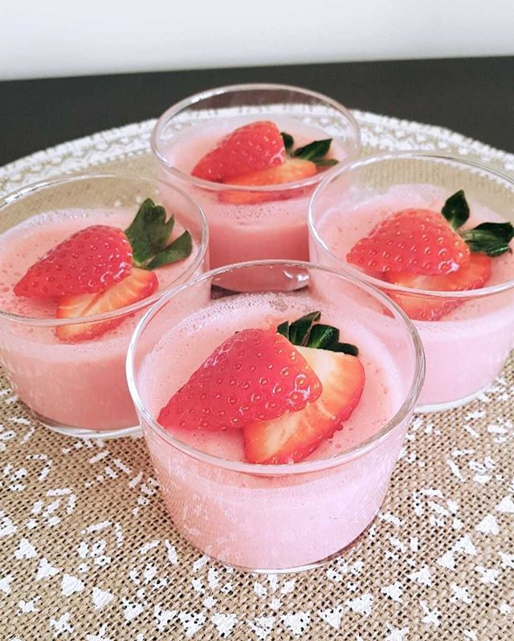
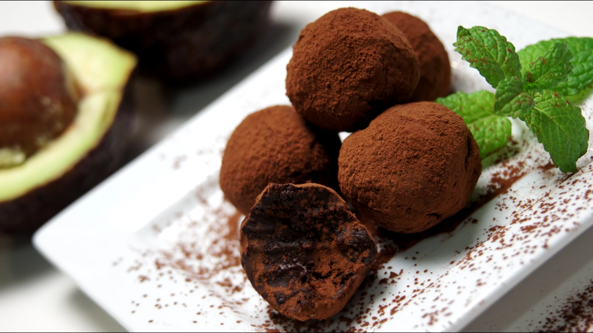
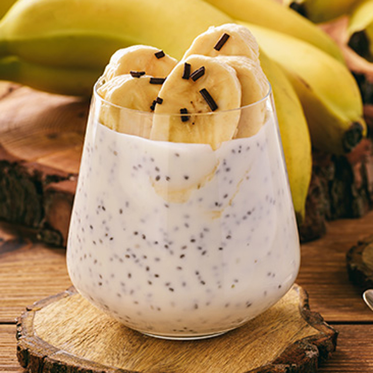
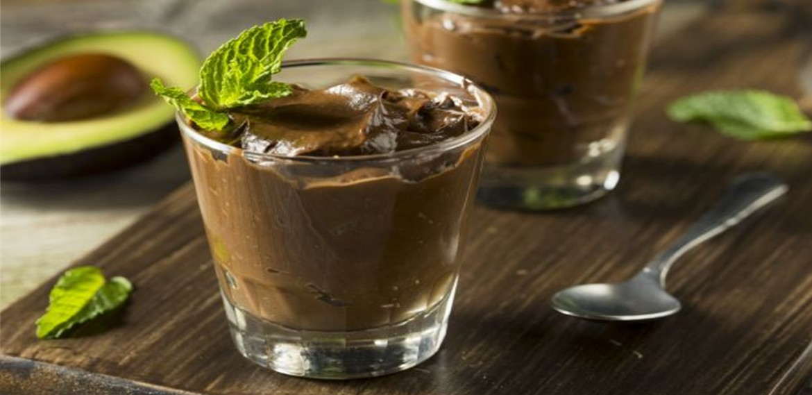
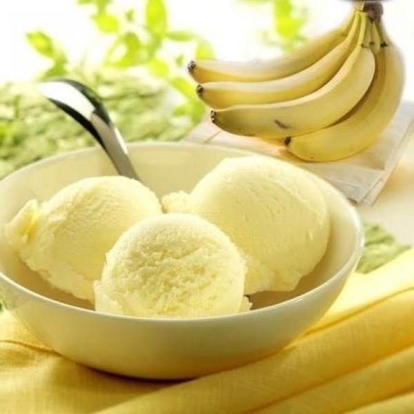
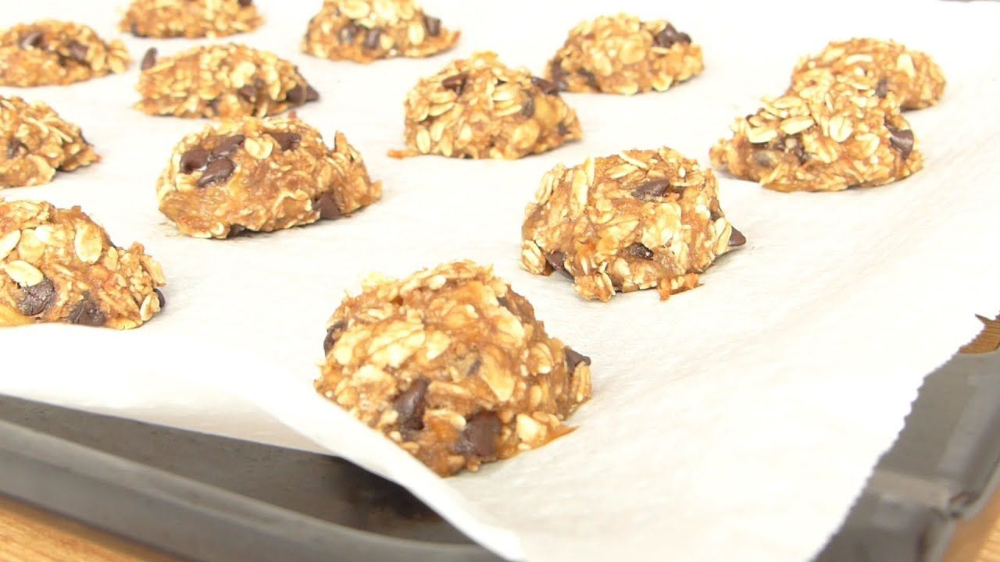
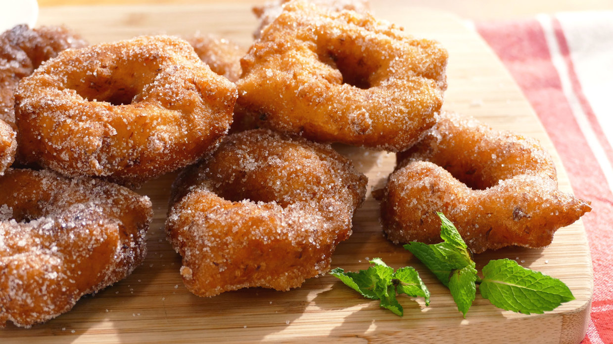
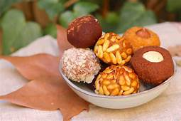
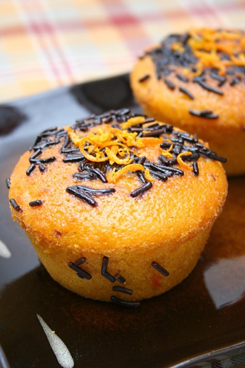

- Mousse of strawberry and cream cheese: 
- Truffle of avocado: 
- Pudding of chia, avocado and banana: 
- Mousse of chocolate and avocado: 
- Banana ice cream: 
- Chocolate of oats and banana: 
- Vegan cream caramel:
- Fritter pumpking: 
- Vegan panellets: 
- Vegan cupcakes of pumpking: 
- Vegan strudel of apple: